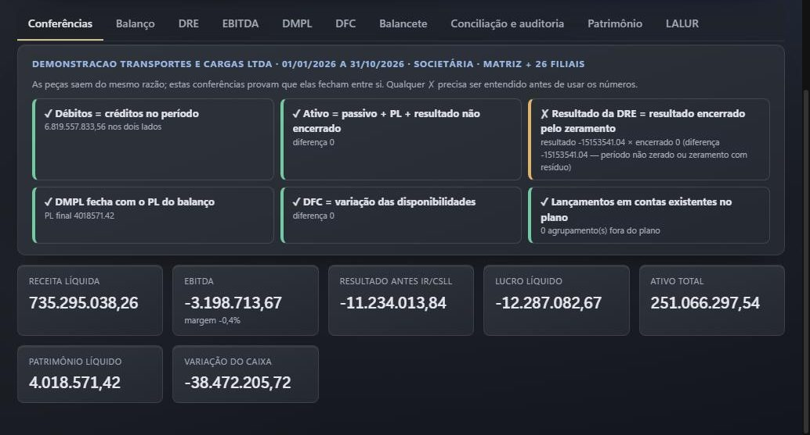

Foco
Consultoria de processos
Diagnóstico da rotina fiscal, contábil e de pessoal: o que o sistema já resolve e o que precisa de um processo novo.
Consultoria de processos e automação contábil
A LCS desenha cada rotina do começo ao fim, automatiza o que o sistema já pode fazer e só então capacita a equipe. Para escritórios contábeis e empresas com contabilidade interna no ERP Único.
Alguns dos nossos clientes
Algumas implantações realizadas
Nosso foco
O foco da LCS é consultoria de processos e automação. Treinar uma equipe numa rotina que ninguém desenhou só repete os erros de hoje. Por isso toda capacitação passa antes pelas duas primeiras etapas.
Onde a rotina começa, onde termina, quem faz cada parte e onde o retrabalho aparece.
Cada processo vira um roteiro prático, passo a passo, com as automações do sistema indicadas no caminho.
A equipe aprende o processo pronto, na base do próprio escritório, até conduzir a rotina sozinha.
O que fazemos
Diagnóstico da rotina fiscal, contábil e de pessoal: o que o sistema já resolve e o que precisa de um processo novo.
Importações, regras de classificação, conferências e relatórios que leem o próprio sistema, sem planilha paralela.
Roteiro prático de cada processo: quando começa, quando termina e o passo a passo entre um e outro, com as automações no caminho.
Parametrização, migração do sistema anterior e treinamento da equipe, sempre sobre o processo já desenhado.
Para quem
Escritórios de todos os portes que usam ou vão usar o ERP Único na rotina fiscal, contábil e de pessoal.
Startups do mercado financeiro, empresas e indústrias que mantêm a contabilidade dentro de casa no ERP Único.
Na prática
É assim que um processo fica formalizado: o ponto de partida, o ponto de chegada e só os passos que dependem de alguém. O que o sistema pode fazer, ele faz.

Extrato do mês disponível no banco.
Importar o extrato no formato do banco.
As regras de classificação geram os lançamentos.
Tratar só as diferenças que sobraram.
Conta conciliada, sem diferença em aberto.
Exemplo ilustrativo. Os procedimentos reais seguem as telas e as regras de cada cliente.
Quem conduz
São mais de 15 anos de vivência em escritórios de contabilidade e em multinacionais como PepsiCo e McDonald's, na área tributária e em projetos.
Conheço o trabalho na prática, do começo ao fim: da implantação do sistema à consultoria de processos e automação. Já conduzi mais de 40 implantações do ERP Único.
Processo bom é processo que se sustenta no dia a dia.
Perguntas frequentes
Não. Todo treinamento passa antes pelo processo: mapeamos, formalizamos e automatizamos a rotina, e a equipe aprende o processo pronto.
Sim. Além de escritórios contábeis, atendemos startups do mercado financeiro, empresas e indústrias que usam o ERP Único na contabilidade interna.
Não. Atendemos quem usa ou vai usar o Único, inclusive na migração de outro sistema.
Sim, em todo o Brasil. O trabalho é online, com visitas presenciais quando o projeto pede.
Por uma conversa sobre a rotina: quantas empresas, quais departamentos e onde está o maior retrabalho. A partir dela propomos o escopo.
Contato
Mande uma mensagem pelo Instagram ou por e-mail com o número de empresas e o departamento envolvido. A resposta vem por escrito.
E-mail: leonardo@lcsconsultoriaonline.com.br